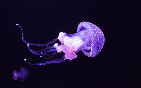

Jellyfish and sea jellies are the informal common names given to the medusa-phase of certain gelatinous members of the subphylum Medusozoa, a major part of the phylum Cnidaria. Jellyfish are mainly free-swimming marine animals with umbrella-shaped bells and trailing tentacles, although a few are anchored to the seabed by stalks rather than being mobile. The bell can pulsate to provide propulsion for highly efficient locomotion. The tentacles are armed with stinging cells and may be used to capture prey and defend against predators. Jellyfish have a complex life cycle; the medusa is normally the sexual phase, which produces planula larvae that disperse widely and enter a sedentary polyp phase before reaching sexual maturity.
Jellyfish are found all over the world, from surface waters to the deep sea. Scyphozoans (the "true jellyfish") are exclusively marine, but some hydrozoans with a similar appearance live in freshwater. Large, often colorful, jellyfish are common in coastal zones worldwide. The medusae of most species are fast-growing, and mature within a few months then die soon after breeding, but the polyp stage, attached to the seabed, may be much more long-lived. Jellyfish have been in existence for at least 500 million years,[1] and possibly 700 million years or more, making them the oldest multi-organ animal group.[2]
Jellyfish are eaten by humans in certain cultures. They are considered a delicacy in some Asian countries, where species in the Rhizostomae order are pressed and salted to remove excess water. Australian researchers have described them as a "perfect food", sustainable, and protein-rich but relatively low in food energy.[3]
They are also used in research, where the green fluorescent protein used by some species to cause bioluminescence has been adapted as a fluorescent marker for genes inserted into other cells or organisms.
The stinging cells used by jellyfish to subdue their prey can injure humans. Thousands of swimmers worldwide are stung every year, with effects ranging from mild discomfort to serious injury or even death. When conditions are favourable, jellyfish can form vast swarms, which can be responsible for damage to fishing gear by filling fishing nets, and sometimes clog the cooling systems of power and desalination plants which draw their water from the sea.